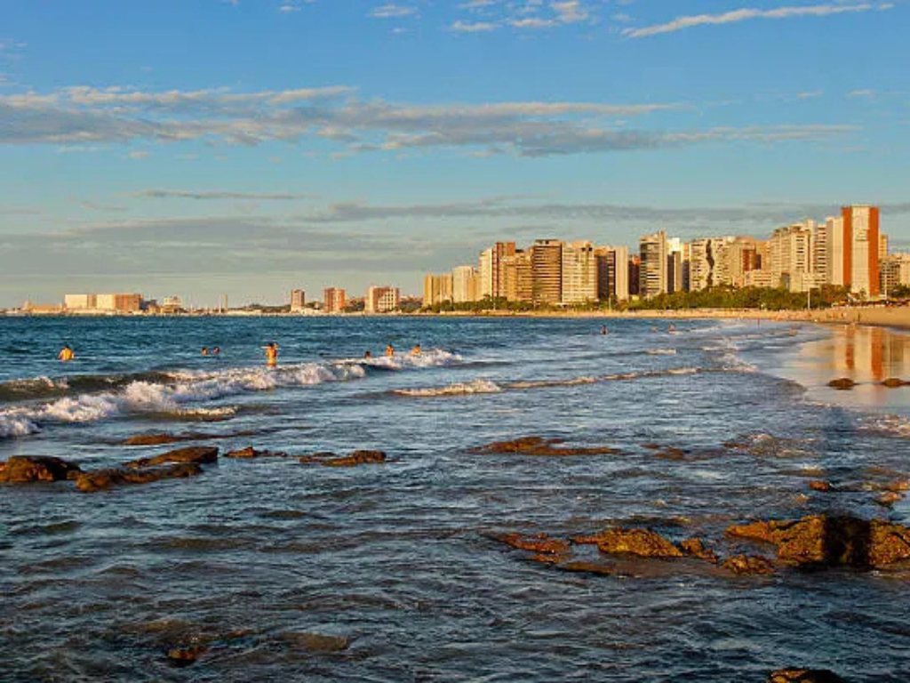

Ceará é um estado localizado no Nordeste do Brasil, conhecido por suas praias, clima quente e forte tradição cultural. Sua capital é Fortaleza, uma das maiores cidades nordestinas e importante centro turístico e econômico da região. O Ceará possui uma economia baseada no turismo, comércio, indústria e agricultura, além de se destacar na produção de energia eólica. O estado é famoso por suas paisagens naturais, como dunas, falésias e praias muito visitadas, entre elas Jericoacoara. Culturalmente, o Ceará tem forte tradição no humor, na música e no artesanato, além de festas populares que valorizam as raízes nordestinas. A culinária cearense também é bastante apreciada, com pratos típicos como baião de dois, carne de sol e peixadas.
